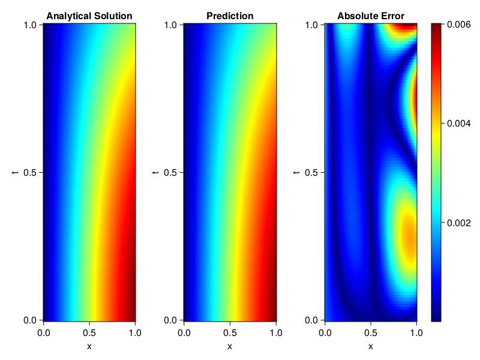
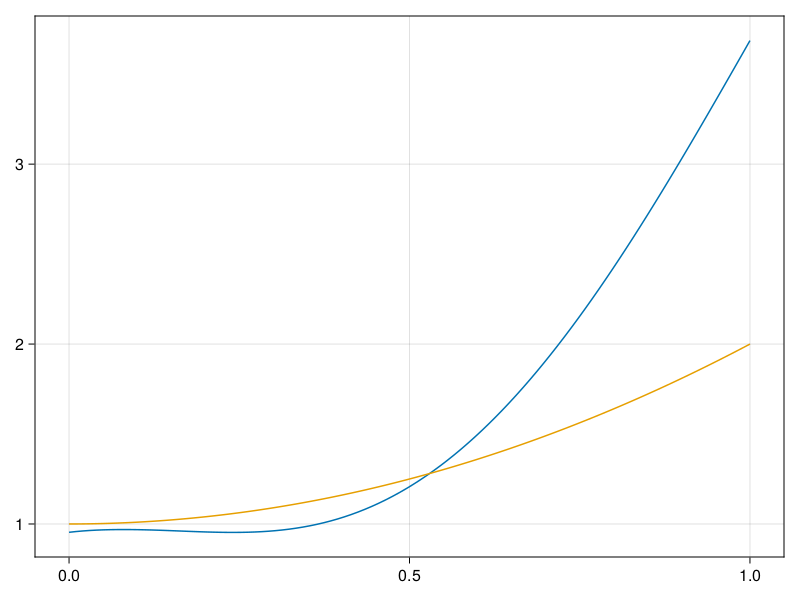

Inverse problem for the wave equation with unknown velocity field
We are going to sovle the wave equation.
using Sophon, ModelingToolkit, IntervalSets
using Optimization, OptimizationOptimJL
@parameters x, t
@variables u(..), c(..)
Dₜ = Differential(t)
Dₜ² = Differential(t)^2
Dₓ² = Differential(x)^2
s(x,t) = abs2(x) * sin(x) * cos(t)
eq = Dₜ²(u(x,t)) ~ c(x) * Dₓ²(u(x,t)) + s(x,t)
bcs = [u(x, 0) ~ sin(x),
Dₜ(u(x, 0)) ~ 0,
u(0, t) ~ 0,
u(1, t) ~ sin(1) * cos(t)]
domains = [t ∈ Interval(0.0, 1.0),
x ∈ Interval(0.0, 1.0)]
@named wave = PDESystem(eq, bcs, domains, [t,x], [u(x,t),c(x)])\[ \begin{align} \frac{\mathrm{d}}{\mathrm{d}t} \frac{\mathrm{d}}{\mathrm{d}t} u\left( x, t \right) =& c\left( x \right) \frac{\mathrm{d}}{\mathrm{d}x} \frac{\mathrm{d}}{\mathrm{d}x} u\left( x, t \right) + \cos\left( t \right) \left|x\right|^{2} \sin\left( x \right) \end{align} \]
Here the velocity field $c(x)$ is unknown, we will approximate it with a neural network.
pinn = PINN(u = FullyConnected((2,16,16,16,1), sin),
c = FullyConnected((1,16,16,1), tanh))
sampler = QuasiRandomSampler(500,100)
strategy = NonAdaptiveTraining(1, (10,10,1,1))NonAdaptiveTraining{Int64, NTuple{4, Int64}}(1, (10, 10, 1, 1))Next we generate some data of $u(x,t)$. Here we place two sensors at $x=0.1$ and $x=0.5$.
ū(x,t) = sin(x) * cos(t)
x_data = hcat(fill(0.1, 1, 50), fill(0.5, 1, 50))
t_data = repeat(range(0.0, 1.0, length = 50),2)'
input_data = [x_data; t_data]
u_data = ū.(x_data, t_data)1×100 Matrix{Float64}:
0.0998334 0.0998126 0.0997503 0.0996464 … 0.275281 0.267213 0.259035Finally we construct the inverse problem and solve it.
additional_loss(phi, θ) = sum(abs2, phi.u(input_data, θ.u) .- u_data)
prob = Sophon.discretize(wave, pinn, sampler, strategy; additional_loss=additional_loss)
@time res = Optimization.solve(prob, BFGS(), maxiters=1000)u: ComponentVector{Float64}(u = (layer_1 = (weight = [-0.882847373000305 -1.125669607487759; -1.0904150555020222 -0.7836266883185821; … ; 0.4964103641197529 0.7686807407906023; -0.8176862913265694 -0.4607241935780001], bias = [0.021948232504178492; 0.09109491513638301; … ; 0.12328733576497282; 0.19299305292857252;;]), layer_2 = (weight = [0.3345777255369545 -0.5229241287019167 … -0.423984022123645 -0.7615155688827997; -0.026465521998527492 0.1700125819700468 … -0.13004843305054292 -0.41581435124593386; … ; -0.27070339879203864 0.01865875552657278 … 0.25101341464421145 -0.25493271507364806; 0.39354369776892034 -0.29119871321428237 … 0.33767483334132115 -0.6040496245501692], bias = [0.18934656924367713; -0.08829973477304771; … ; -0.05415653892671098; -0.25328681744934534;;]), layer_3 = (weight = [0.2285668950408767 0.5985040990756517 … -0.3464661181063067 -0.1289325222440403; 0.4529337362909147 0.07408211318088515 … 0.4291630399953139 -0.07010061427791298; … ; 0.20837400076024865 0.21170460602354027 … -0.4034558430036169 -0.37194358921254833; -0.1993043467791314 0.33750388200496756 … 0.19325909438929217 0.48769687684605373], bias = [-0.015681111642926803; -0.12344575459237805; … ; 0.009916650411500293; 0.10539362883277427;;]), layer_4 = (weight = [0.3454566935902032 -0.34744253708670025 … -0.18979234589837254 0.1366527350437811], bias = [0.11848107865578116;;])), c = (layer_1 = (weight = [0.7100190140172808; -1.96442311283166; … ; -0.1633005340334802; -0.651426212751111;;], bias = [-0.2170934396346809; -0.5982084936143613; … ; -0.3756503574172774; 0.010692667820752573;;]), layer_2 = (weight = [-0.1673123290312929 -0.21182472373450514 … -0.7162197679742092 -0.7422727828582665; -0.32169727724797614 -0.6492306284748963 … 0.2009396569806469 -0.11851184937750678; … ; 0.28902456061406684 -0.6077323978815578 … 0.44261352162040074 0.40330387013674784; 0.14140972143119188 -0.008154437511145005 … -0.24028325705987286 0.12257168456687442], bias = [0.23607921127751752; 0.19913760015281357; … ; 0.18941844676029806; 0.13956865175251335;;]), layer_3 = (weight = [1.0085440572460524 0.7807454817767165 … 0.6556325956969464 0.5212256396928495], bias = [0.4759259154780482;;])))Let's visualize the predictted solution and inferred velocity
using CairoMakie
ts = range(0, 1; length=100)
xs = range(0, 1; length=100)
u_pred = [pinn.phi.u([x, t], res.u.u)[1] for x in xs, t in ts]
c_pred = [pinn.phi.c([x], res.u.c)[1] for x in xs]
u_true = [ū(x, t) for x in xs, t in ts]
c_true = 1 .+ abs2.(xs) |> vec
axis = (xlabel="x", ylabel="t", title="Analytical Solution")
fig, ax1, hm1 = heatmap(xs, ts, u_true, axis=axis; colormap=:jet)
ax2, hm2= heatmap(fig[1, end+1], xs, ts, u_pred, axis= merge(axis, (;title = "Prediction")); colormap=:jet)
ax3, hm3 = heatmap(fig[1, end+1], xs, ts, abs.(u_true .- u_pred), axis= merge(axis, (;title = "Absolute Error")); colormap=:jet)
Colorbar(fig[:, end+1], hm3)
fig
fig, ax = lines(xs, c_pred)
lines!(ax, xs, c_true)
fig